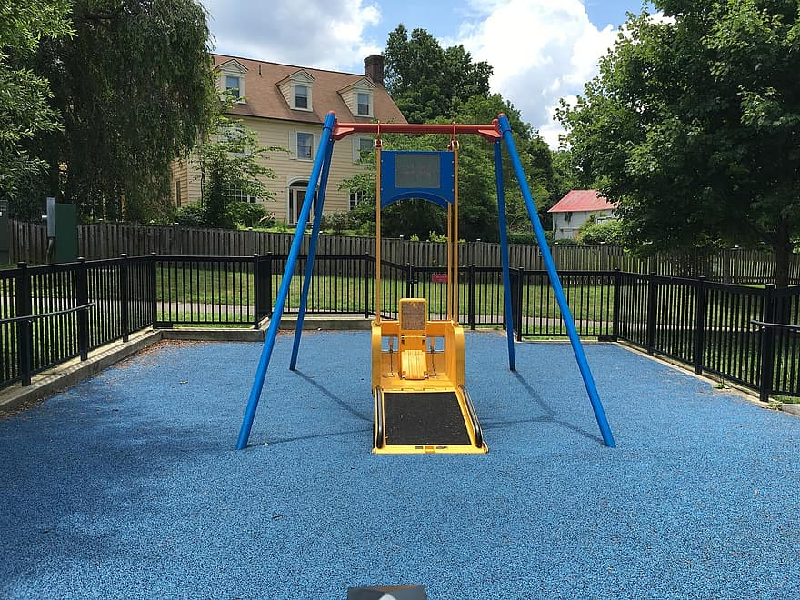
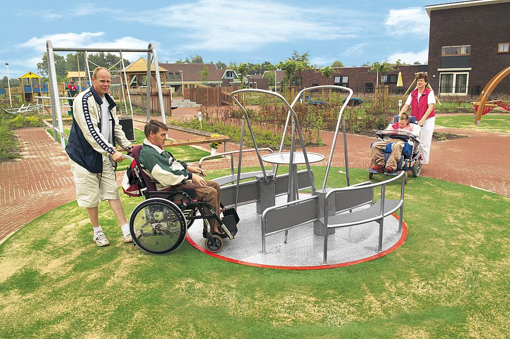

In the heart of GlobalGiving, a vibrant new playground has sprung to life, courtesy of the generosity of an Australian company with roots tracing back to South Africa. This playground isn't your average play area; it's a dynamic space crafted from durable metal, designed to ignite the imaginations of children and foster a sense of adventure. With its colourful structures and innovative features, it's a place where kids can let their spirits soar and friendships flourish.

Sponsored by the Australian company, this playground represents more than just a recreational space — it's a symbol of community spirit and collaboration. As children from all walks of life come together to explore its twists and turns, they're not just playing; they're forging connections and building memories that will last a lifetime. And it's all made possible by the generosity of a company that understands the importance of giving back to the communities it serves.

One of the most remarkable aspects of this playground is its commitment to inclusivity. Designed with accessibility in mind, the playground features ramps, wide pathways, and specialised equipment to ensure that children of all abilities can join in the fun. For wheelchair-bound children, there are specially designed swings and interactive elements that allow them to experience the joy of play in a safe and supportive environment. It's a powerful testament to the belief that every child deserves the chance to play, regardless of their physical abilities.

The decision to sponsor this inclusive playground speaks volumes about the values upheld by the Australian company. By investing in projects that promote inclusivity and well-being, they're not just building playgrounds; they're building communities. And as children laugh and play, it's a reminder that sometimes, the greatest gifts come in the simplest forms — a slide, a swing, and the opportunity to just be a kid.